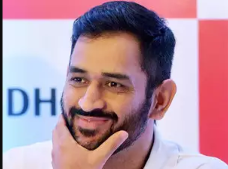

M. S. Dhoni
Mahendra Singh Dhoni commonly known as MS Dhoni; born 7 July 1981) is an Indian international cricketer who captained the Indian national team in limited-overs formats from 2007 to 2016 and in Test cricket from 2008 to 2014. An attacking right-handed middle-order batsman and wicket-keeper, he is widely regarded as one of the greatest finishers in limited-overs cricket. He is also regarded as one of the best wicket-keepers in world cricket and is known to have very fast hands. He made his One Day International (ODI) debut in December 2004 against Bangladesh, and played his first Test a year later against Sri Lanka.
Dhoni has been the recipient of many awards, including the ICC ODI Player of the Year award in 2008 and 2009 (the first player to win the award twice), the Rajiv Gandhi Khel Ratna award in 2007, the Padma Shri, India's fourth highest civilian honour, in 2009 and the Padma Bhushan, India's third highest civilian honour, in 2018. He was named as the captain of the ICC World Test XI in 2009, 2010 and 2013. He has also been selected a record 8 times in ICC World ODI XI teams, 5 times as captain. The Indian Territorial Army conferred the honorary rank of Lieutenant Colonel to Dhoni on 1 November 2011. He is the second Indian cricketer after Kapil Dev to receive this honour.
Dhoni also holds numerous captaincy records such as the most wins by an Indian captain in Tests, ODIs and T20Is, and most back-to-back wins by an Indian captain in ODIs. He took over the ODI captaincy from Rahul Dravid in 2007 and led the team to its first-ever bilateral ODI series wins in Sri Lanka and New Zealand. Under his captaincy, India won the 2007 ICC World Twenty20, the CB Series of 2007–08, the 2010 Asia Cup, the 2011 ICC Cricket World Cup and the 2013 ICC Champions Trophy. In the final of the 2011 World Cup, Dhoni scored 91 not out off 79 balls handing India the victory for which he was awarded the Man of the Match. In June 2013, when India defeated England in the final of the Champions Trophy in England, Dhoni became the first captain to win all three ICC limited-overs trophies (World Cup, Champions Trophy and the World Twenty20). After taking up the Test captaincy in 2008, he led the team to series wins in New Zealand and West Indies, and the Border-Gavaskar Trophy in 2008, 2010 and 2013. In 2009, Dhoni also led the Indian team to number one position for the first time in the ICC Test rankings. In 2013, under his captaincy, India became the first team in more than 40 years to whitewash Australia in a Test series. In the Indian Premier League, he captained the Chennai Super Kings to victory at the 2010 and 2011 seasons, along with wins in the 2010 and 2014 editions of Champions League Twenty20. He announced his retirement from Tests on 30 December 2014.
In 2011, Time magazine included Dhoni in its annual Time 100 list as one of the "Most Influential People in the World." In 2012, SportsPro rated Dhoni as the sixteenth most marketable athlete in the world. In June 2015, Forbes ranked Dhoni at 23rd in the list of highest paid athletes in the world, estimating his earnings at US$31 million. In 2016, a biopic M.S. Dhoni: The Untold Story was made about him.
Dhoni holds the post of Vice-President of India Cements Ltd., after resigning from Air India. India Cements is the owner of the IPL team Chennai Super Kings, and Dhoni has been its captain since the first IPL season. Dhoni is the co-owner of Indian Super League team Chennaiyin FC.
Early life and background
Dhoni holds the post of Vice-President of India Cements Ltd., after resigning from Air India. IDhoni was born in Ranchi, Bihar (now in Jharkhand), and he identifies as a Hindu Rajput. His paternal village Lvali is in the Lamgarha block of the Almora District of Uttarakhand. Dhoni's parents moved from Uttarakhand to Ranchi, where his father Pan Singh worked in junior management positions in MECON. Dhoni has a sister Jayanti Gupta and a brother Narendra Singh Dhoni. Dhoni is a fan of Adam Gilchrist, and his childhood idols were cricket teammate Sachin Tendulkar, Bollywood actor Amitabh Bachchan and singer Lata Mangeshkar
Dhoni holds the post of Vice-President of India Cements Ltd., after resigning from Air India. IDhoni studied at DAV Jawahar Vidya Mandir, Shyamali, Ranchi, Jharkhand where he initially excelled in badminton and football and was selected at district and club level in these sports. Dhoni was a goalkeeper for his football team and was sent to play cricket for a local cricket club by his football coach. Though he had not played cricket, Dhoni impressed with his wicket-keeping skills and became the regular wicketkeeper at the Commando cricket club (1995–1998). Based on his performance at club cricket, he was picked for the 1997/98 season Vinoo Mankad Trophy Under-16 Championship and he performed well. Dhoni focused on cricket after his 10th standard. Dhoni was a Travelling Ticket Examiner (TTE) at Kharagpur railway station from 2001 to 2003, under South Eastern Railway in Midnapore (W), a district in West Bengal.[23][24][25] His colleagues remember him as a very honest, straightforward employee of the Indian Railways. But he also had a mischievous side to his personality. Once, while staying at the railway quarters, Dhoni and a couple of his friends covered themselves in white bedsheets and walked around in the complex late in the night. The night guards were fooled into believing that there were ghosts moving around in the complex. The story made big news on the next day.
Captain of India
Dhoni was named the captain of Indian squad for the inaugural ICC World Twenty20 held in South Africa in September 2007. India were crowned champions as Dhoni led the team to victory against Pakistan in a thrilling contest. He went on to become the ODI captain of the Indian team for the seven-match ODI series against Australia in September 2007. He made his debut as full-time Test captain of India during the fourth and final Test against Australia at Nagpur in November 2008, replacing Anil Kumble who was injured in the third test and who then announced his retirement. Dhoni was vice-captain in this series up to that point. India eventually won that Test, thus clinching the series 2–0 and retained the Border-Gavaskar Trophy. Dhoni had previously captained India on a stand-in basis against South Africa and Australia, in 2008 and 2009 respectively.

It was under his captaincy that India climbed to No. 1 in the ICC Test Rankings in December 2009. After that, he managed to lead India in a series-levelling world championship of Tests against the South Africans in February 2010. India also managed to draw the Test series 1–1 in South Africa later that year.
After winning the 2011 ICC Cricket World Cup final against Sri Lanka on 2 April 2011, with his match-winning knock of unbeaten 91, Tendulkar heaped praises on Dhoni, claiming him to be the best captain he has played under. Tendulkar mentioned that it was Dhoni's calm influence that was rubbing off on all his teammates and described Dhoni's handling of pressure as incredible.
Only eleven players have captained ten or more Tests playing as a wicket-keeper. Dhoni leads the table with 60 Tests as captain, 35 ahead of Mushfiqur Rahim in second place.
In March 2013, Dhoni became the most successful Indian Test captain when he eclipsed Sourav Ganguly's record of 21 victories from 49 Tests. Ganguly also said in an interview to a news channel that Dhoni is the all-time greatest captain of India and he has a great record to support this credential.
In August 2016, Dhoni was selected as captain for India's first tour to the United States, where India played two T20Is against the West Indies in Lauderhill, Florida. India lost the first match on 27 August 2016, during which Dhoni surpassed former Australian captain Ricky Ponting to become the most experienced captain in international cricket.
Dhoni's final game as the Indian limited-overs captain was on 10 January 2017, in a warm-up game between England and India during the limited-overs leg of England's tour of India. Dhoni stated he will still fulfil his duties as the captain in various domestic teams.
Indian Premier League
Dhoni was contracted by the Chennai Super Kings for 1.5 Million USD. This made him the most expensive player in the IPL for the first season auctions. Under his captaincy, Chennai Super Kings have won two Indian Premier League titles and the 2010 Champions League Twenty20. After the suspension of CSK for two years, he was bought by Rising Pune Supergiant for 1.9 Million USD in 2016, and was named captain. However, his team finished in 7th place. In 2018, Chennai Super Kings returned to IPL and Dhoni was again selected to lead the franchise.